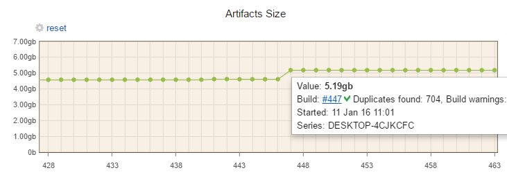
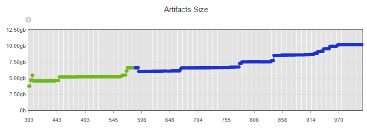
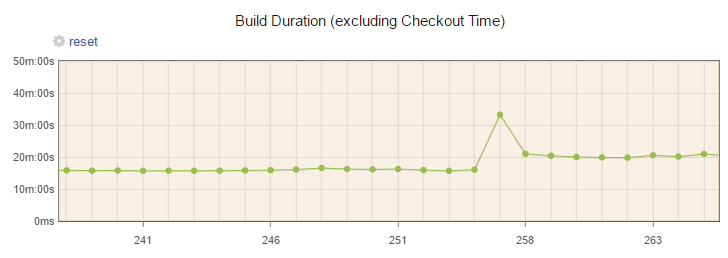
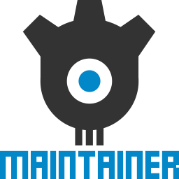

A selection of fantastic anecdotes about Continuous Integration in Unity
Ben Hymers http://www.benhymers.com
Hello!
I'm Ben!
- Rare - Kinect Sports 1&2
- Creative Assembly - Alien: Isolation
- Lionhead - Incubation ... *cough*
- Playsport - Motorsport Manager
- ... and something else soon
Not a build engineer...
Continuous Integration - What?
- "Build automation"
- Check project builds successfully
- Run tests
- Deploy
Continuous Integration - Why?
- Make sure build always works outside editor
- Do repetetive bits devs will miss
- Monitor project quality
Continuous Integration - How?
- Use TeamCity
- ... or Jenkins if you don't like nice things
- Run on normal PC, as service on Windows, PostgreSQL DB
Lightmaps are big!
Set up script to track built game size as Team City metric
Noticed this one day after wondering about build size limits

Checked contributing changelist... lightmaps!
Lightmaps are big!
Carried on tracking this... it's not looking good!

Nearly always lightmaps
Sadly no good analysis tools - best ones are for hackers!
Unity build time jump
Noticed this whilst browsing standalone build duration graphs one day...

That was the day we upgraded to Unity 5.3.0!
Would maybe have noticed some time later...
Wall-t
Nobody cares about build failures... unless they can see them!
Unity build runner plugin is fairly terrible
Fail on log errors and artifact size change
Team City default fail conditions don't work for Unity plugin:
- Set built-in option "an error message is logged by build runner"
- Fail if artifact size changes by -90% or +50%
- Catches anything that doesn't set some fail state
Write a build script!
Unity command line options are limited
- Write your own build script (just a static method)
- Run it with
-executeMethod
- Parse command line yourself with
System.Environment.GetCommandLineArgs
Maintainer

- Missing prefabs
- Warning spam about missing scripts
- Maintainer helps! Run it from the build script
- Log stats with:
##teamcity[buildStatisticValue key='{0}' value='{1}']
Warnings as errors
Build warnings creep up over time
- Fix them all then set warnings as errors
- Create gmcs.rsp and smcs.rsp in Assets
- Fill them with "
-warnaserror+ -nowarn:0649"
Unity bug with new/deleted files
- Random false build failures
- Unity compiles before updating assets! (bug 759704)
- Workaround: build twice
- Ignore errors in first build with "Errors as Warnings" flag
Meta files
OH MY GOD META FILES
- Check in your damn meta files!
- Not a Unity 'Quirk' - can cause broken prefabs, materials, you name it
- Not yet solved but considering TeamCity SWABRA plugin
- Can report files generated by build machine
- More than a bit flaky though!
Upgrade Unity on all machines at once
Minor updates (and patches!) change serialisation format
Devs on different versions churn files
Update all at once
Run script to force save assets
EditorUtility.SetDirty and AssetDatabase.SaveAssets
SVN is SLOW
Nightly clean build grew to ~12 hours!
Import SVN to git using git-svn and host locally
Massively faster full sync
Many problems so not rolled out yet
Copy Steampipe out of build directory
Automated Steam building is ace!
... except when it fails to log in because of Steam Guard
Turns out auth is stored locally
Copy steamcmd.exe elsewhere so auth doesn't get cleared
Unit Tests
Unfamiliar codebase - test assumptions!
Use 'Editor Tests Runner' window in-editor
Run on command line with:
-runEditorTests-editorTestsResultFile path.xml-editorTestsFilter-editorTestsVerboseLog teamcity- "XML report processing" build feature
Future work
- Capture all non-code warnings
- Asset size breakdown
- Functional testing
- Loads more! This stuff is cool, right?!